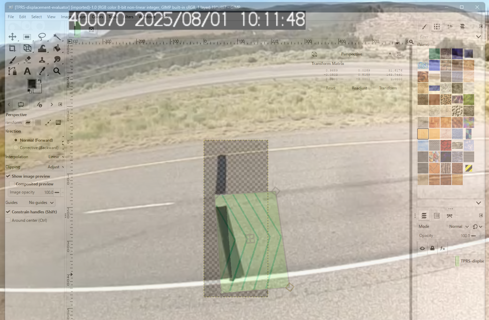

this is my first web page
How exciting
Heading level 6 is smaller than even normal text in the default settings.
Yes, that really is exciting. Warning: level of excitement may cause head to explode.

There are three main types of image files.
For my own website, I'll need to experiment with what level of compression I am comfortable with. I want to stay within the 1GB neocities limit for as long as possible, but suspect my blogs will be image heavy, especially in regards to my future models. Most of my other ideas are also accompanied by some sort of graphic.
HTML tables are commonly abused to layout pages, but best practice is to rely on CSS for that role. Tables should be used as intended, to structure tabular data.
| Row 1, cell 1 | Row 1, cell 2 | Row 1, cell 3 |
| Row 2, cell 1 | Row 2, cell 2 | Row 2, cell 3 |
| Row 3, cell 1 | Row 3, cell 2 | Row 3, cell 3 |
This is example form that is incomplete.